رؤية أوضح للعمل
رتّب المواقع والمدربين والبرامج والاشتراكات ضمن مسار تشغيلي واحد، وراجع النتائج من مصدرها.
 دليل الأكاديميات / قطرACADEMY EXPERIENCE GUIDE
دليل الأكاديميات / قطرACADEMY EXPERIENCE GUIDEمن أول تسجيل دخول إلى أول حصة وتحصيل

دليل التهيئة والتشغيل
لوحة الشركاء وتطبيقات Hagzz
دليل الأكاديميات / قطرACADEMY EXPERIENCE GUIDEإلى مالك الأكاديمية ومسؤول التشغيل
موعد واضح. تسجيل دقيق. تحصيل مفهوم. ومعلومة تجدها عندما تحتاج إليها. صُمم هذا الدليل ليساعد فريقك على بناء هذه التجربة، خطوة بخطوة.
رتّب المواقع والمدربين والبرامج والاشتراكات ضمن مسار تشغيلي واحد، وراجع النتائج من مصدرها.
كل موظف بحسابه وصلاحياته. خطوات يمكن الرجوع إليها عند بدء العمل أو انضمام عضو جديد.
بيانات لاعب دقيقة، ومواعيد واضحة، وحساب مستقل لولي الأمر في Hagzz Partner بعد تفعيله.
اقرأ رحلة التشغيل مرة واحدة، ثم استخدم الصفحات المصوّرة مرجعًا للفريق. ابدأ بتجربة تشغيل على حساب مخصص قبل دعوة العملاء.
دليل الأكاديميات / قطرACADEMY EXPERIENCE GUIDEمرجع سريع للعودة إلى الخطوة المطلوبة.
للمالك: التهيئة ثم التسجيل والتشغيل. لولي الأمر: مسار Hagzz Partner. لاختيار التدريبات: تطبيق Hagzz.
دليل الأكاديميات / قطرACADEMY EXPERIENCE GUIDEمبادرة من Hagzz وواحة قطر للعلوم والتكنولوجيا
خصومات وشهور مجانية لدعم التحول الرقمي في القطاع الرياضي، دون تمييز بحسب حجم الأكاديمية.
الأسعار الأساسية منشورة في صفحة الباقات. يوضح عرض المنحة الخصم، وعدد الأشهر المجانية، ونطاق الخدمة المعتمد لأكاديميتك.
استعرض الباقات ←عرّف فريقنا بأكاديميتك وطريقة تشغيلها، ثم استلم تفاصيل العرض وخطوات التفعيل وروابط التطبيقات المناسبة.

تحدد مدة الإتاحة ونسبة الخصم والمزايا المشمولة في العرض المعتمد للأكاديمية. هذا الدليل لا يحدد نسبة أو عدد أشهر موحدًا.
دليل الأكاديميات / قطرACADEMY EXPERIENCE GUIDEاختر التطبيق والحساب المناسبين قبل البدء.
المساحة الأساسية لإعداد الأكاديمية وإدارة البرامج واللاعبين والاشتراكات والتحصيل.
حساب مخصص للمالك لإدارة ومتابعة الأكاديمية من التطبيق، بحسب ما يتاح لحسابه.
حساب مستقل عن المالك. يُفعّل المسار الخاص بولي الأمر بالتنسيق مع الأكاديمية لمتابعة ما يُتاح له من بيانات.
التطبيق المخصص لاكتشاف الأكاديميات واختيار التدريبات ومراجعة تفاصيلها وإجراءات التسجيل المتاحة.
لا يستخدم ولي الأمر بيانات دخول المالك. كما أن حساب تطبيق العملاء لا يُفترض أنه يمنح تلقائيًا دخولًا إلى Hagzz Partner. اطلب تفعيل الحساب الصحيح وربط بيانات اللاعب عبر الأكاديمية عند الحاجة.
دليل الأكاديميات / قطرACADEMY EXPERIENCE GUIDEتجهيز البيانات مرة واحدة يجعل الإعداد أسرع.
| ما المطلوب؟ | من يجهّزه؟ | ما الذي تراجعه؟ |
|---|---|---|
| اسم الأكاديمية وشعارها | المالك | الاسم بالعربية والإنجليزية وحق استخدام الشعار |
| الفروع ومواقع التدريب | مسؤول التشغيل | الدولة: قطر، المدينة، العنوان وبيانات الوصول |
| المدربون والرياضات | مسؤول التشغيل | الاسم والهاتف والرياضة وتفاصيل التكليف |
| البرامج والمواعيد | الإدارة والمدرب | المستوى والفئة والسعة والأيام والتوقيت |
| اللاعب وولي الأمر | التسجيل | صحة التواصل والمعلومات الصحية اللازمة |
| الاشتراكات والتحصيل | المسؤول المالي | السعر والمدة وطريقة الدفع وصلاحية التحصيل |
استخدم متصفحًا حديثًا واتصالًا مستقرًا. لا تحتاج لوحة الشركاء إلى تثبيت برنامج على الكمبيوتر. خصص حسابًا مستقلًا لكل موظف، ولا تتشارك كلمات المرور.
دليل الأكاديميات / قطرACADEMY EXPERIENCE GUIDEخطوة 01 / دخول المالك أو مسؤول التشغيل
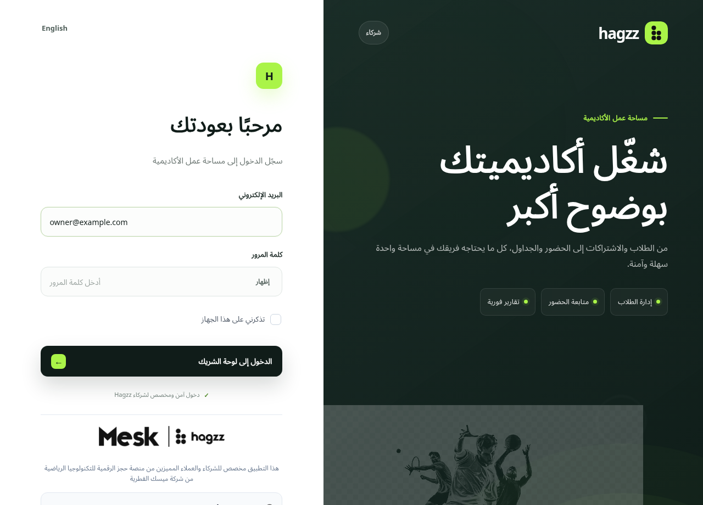
دليل الأكاديميات / قطرACADEMY EXPERIENCE GUIDEخطوة 02 / القائمة مرتّبة حسب مراحل العمل
 دليل الأكاديميات / قطرACADEMY EXPERIENCE GUIDE
دليل الأكاديميات / قطرACADEMY EXPERIENCE GUIDEخطوة 03 / هوية صحيحة وبيانات اتصال واضحة
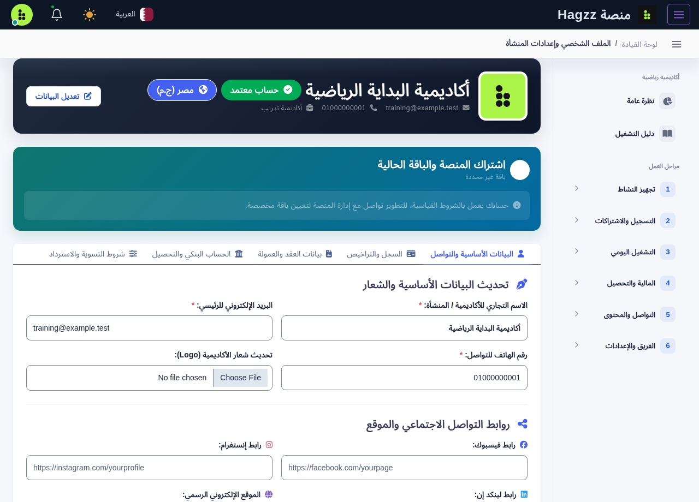
دليل الأكاديميات / قطرACADEMY EXPERIENCE GUIDEابدأ بالموقع والمدرب والبرنامج. حين تكون الأسس واضحة، يصبح التسجيل والعمل اليومي أسهل في المراجعة.
ابدأ بالموقع والمدرب والبرنامج. حين تكون الأسس واضحة، يصبح التسجيل والعمل اليومي أسهل في المراجعة.
دليل الأكاديميات / قطرACADEMY EXPERIENCE GUIDEخطوة 04 / الأساس الذي سترتبط به البرامج والحصص
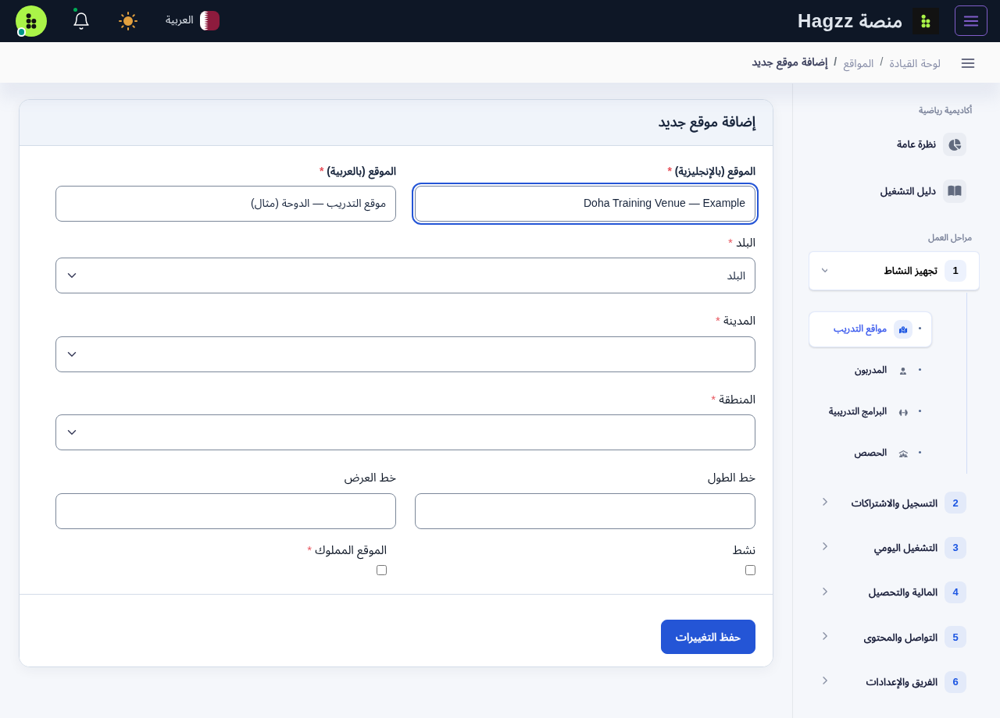
دليل الأكاديميات / قطرACADEMY EXPERIENCE GUIDEخطوة 05 / بيانات تشغيل واضحة لكل مدرب
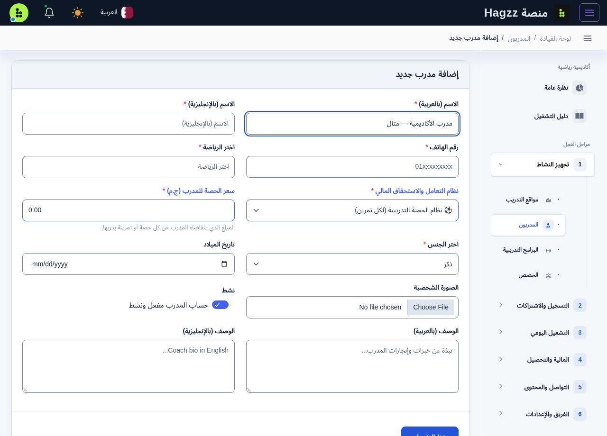
دليل الأكاديميات / قطرACADEMY EXPERIENCE GUIDEخطوة 06 / البرنامج يصف ما تقدمه الأكاديمية
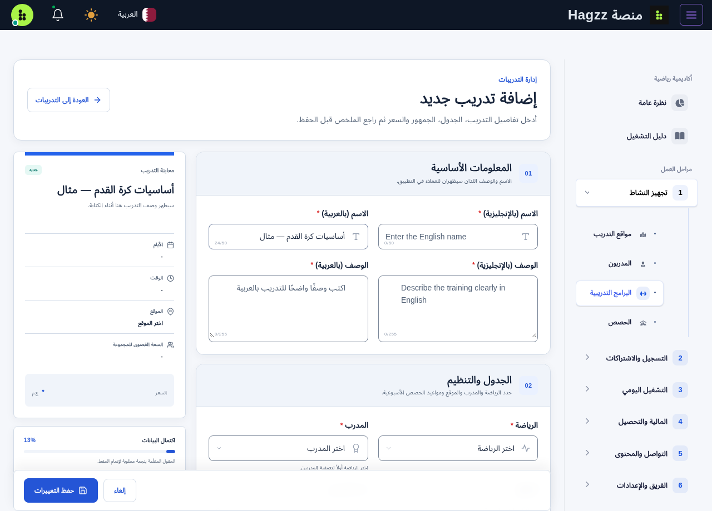
دليل الأكاديميات / قطرACADEMY EXPERIENCE GUIDEخطوة 07 / البرنامج ليس هو الحصة
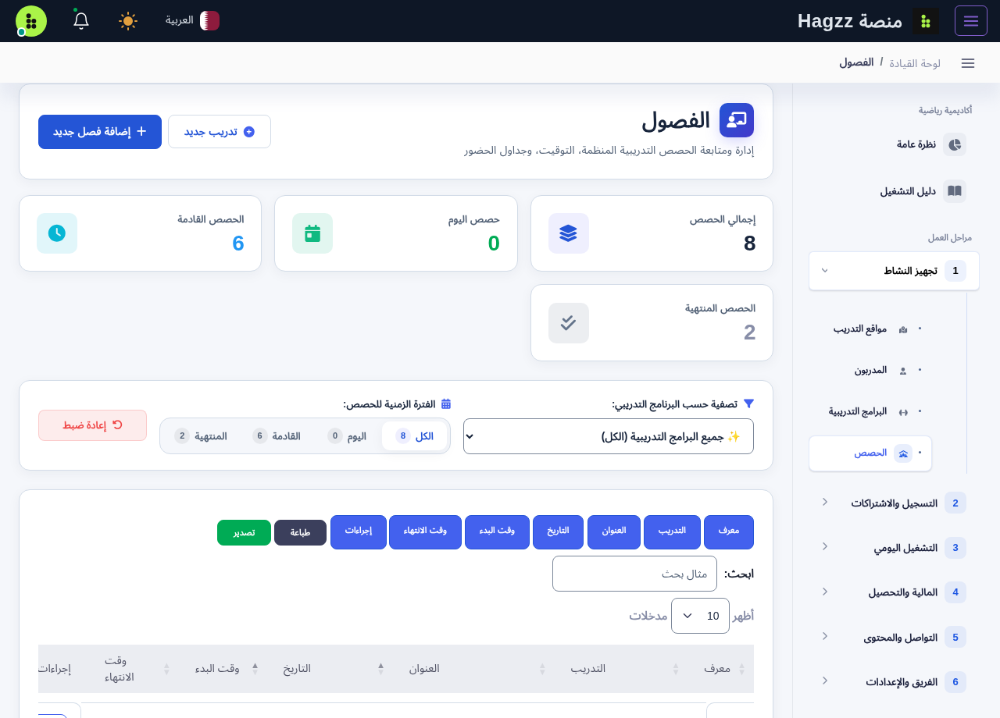
دليل الأكاديميات / قطرACADEMY EXPERIENCE GUIDEملف لاعب واضح، ومجموعة صحيحة، واشتراك يمكن مراجعة قيمته ومدته وحركة سداده.
ملف لاعب واضح، ومجموعة صحيحة، واشتراك يمكن مراجعة قيمته ومدته وحركة سداده.
دليل الأكاديميات / قطرACADEMY EXPERIENCE GUIDEخطوة 08 / ملف واحد واضح بدل السجلات المتكررة
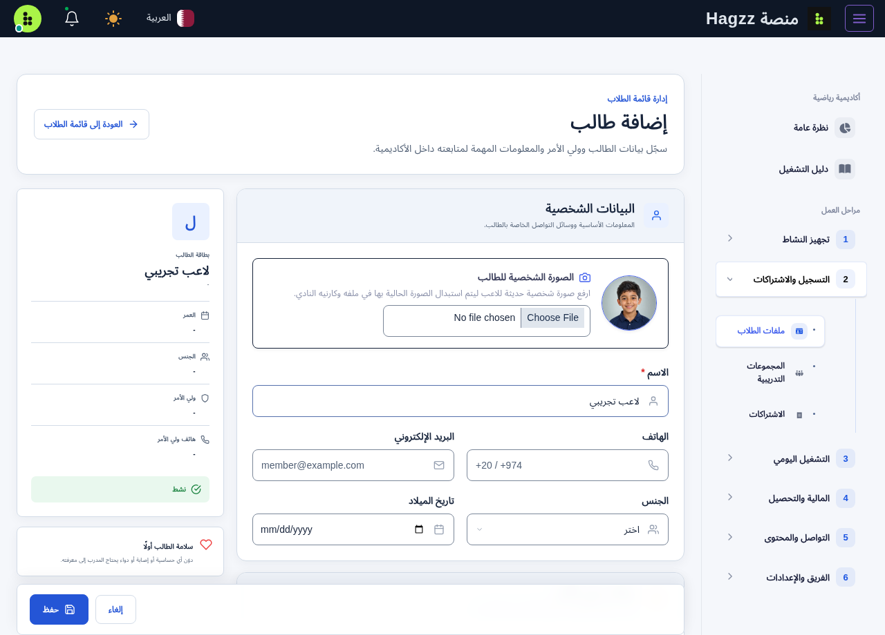
دليل الأكاديميات / قطرACADEMY EXPERIENCE GUIDEخطوة 09 / المجموعة تربط البرنامج باللاعبين
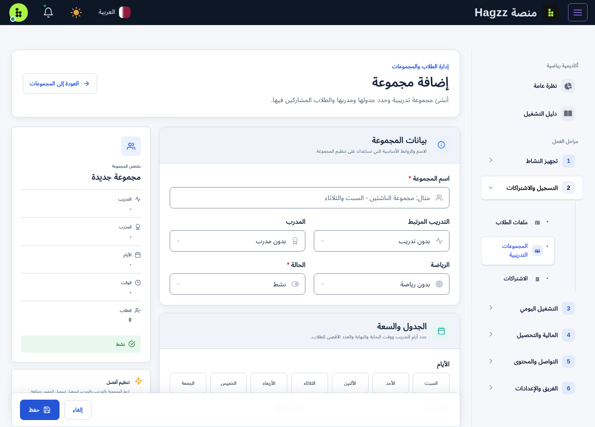
دليل الأكاديميات / قطرACADEMY EXPERIENCE GUIDEخطوة 10 / مدة الاشتراك وقيمته وحالته
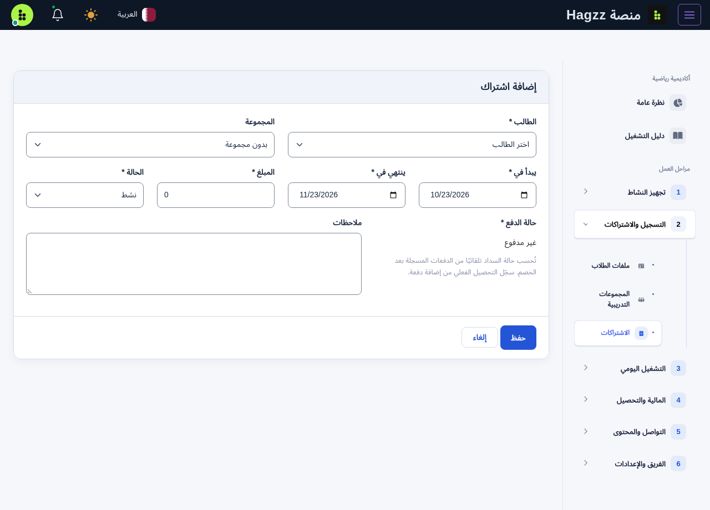
دليل الأكاديميات / قطرACADEMY EXPERIENCE GUIDEخطوة 11 / إثبات كل حركة مالية
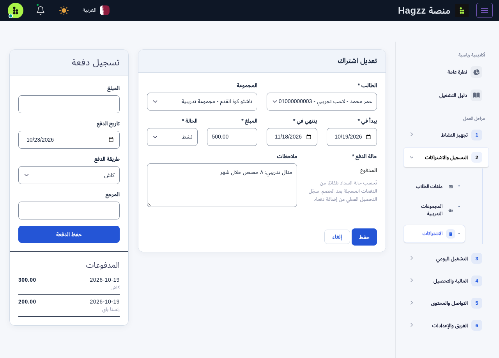
دليل الأكاديميات / قطرACADEMY EXPERIENCE GUIDEخطوة 12 / تحصيل واضح للموظف وولي الأمر
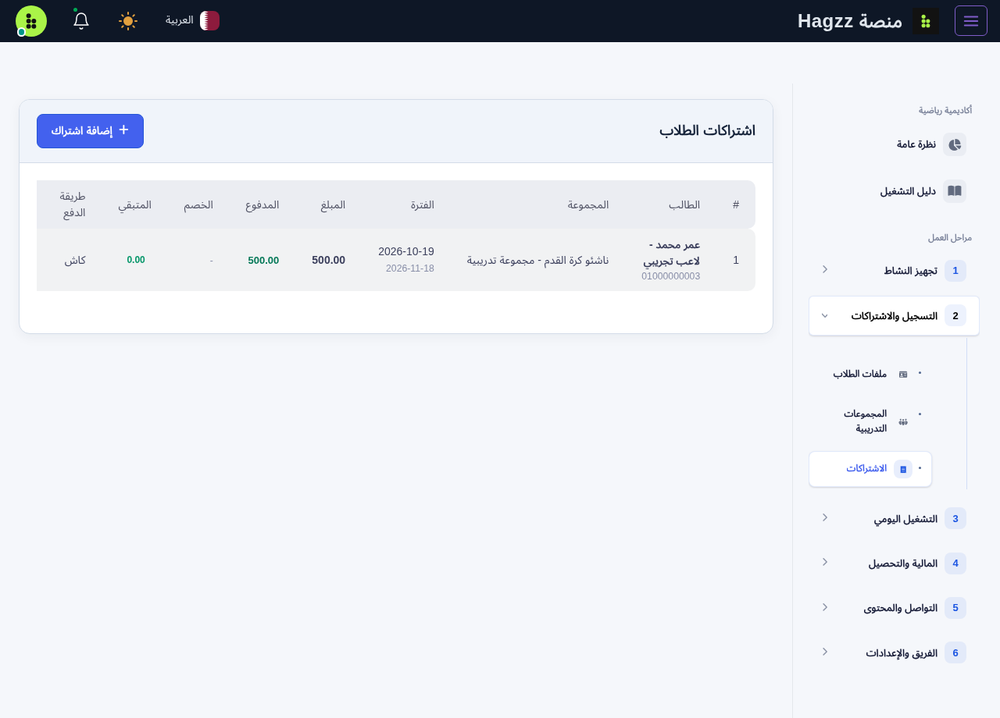
دليل الأكاديميات / قطرACADEMY EXPERIENCE GUIDEمن كشف الحضور إلى التقارير وصلاحيات الفريق؛ أغلق كل خطوة بعد التحقق من نتيجتها.
من كشف الحضور إلى التقارير وصلاحيات الفريق؛ أغلق كل خطوة بعد التحقق من نتيجتها.
دليل الأكاديميات / قطرACADEMY EXPERIENCE GUIDEخطوة 13 / جلسة للمجموعة في يوم التدريب
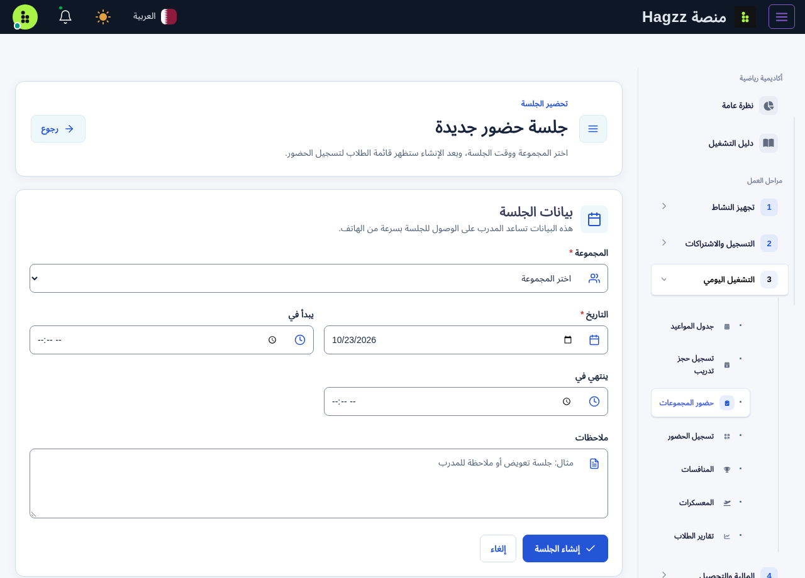
دليل الأكاديميات / قطرACADEMY EXPERIENCE GUIDEخطوة 14 / مراجعة النتيجة أهم من عملية المسح
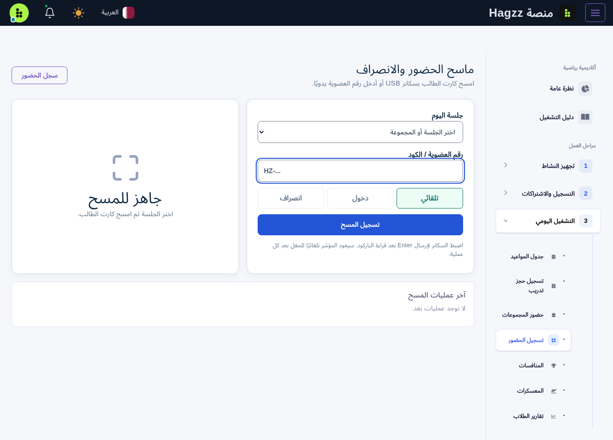
دليل الأكاديميات / قطرACADEMY EXPERIENCE GUIDEخطوة 15 / حضور صحيح وتحويلات مالية قابلة للمراجعة
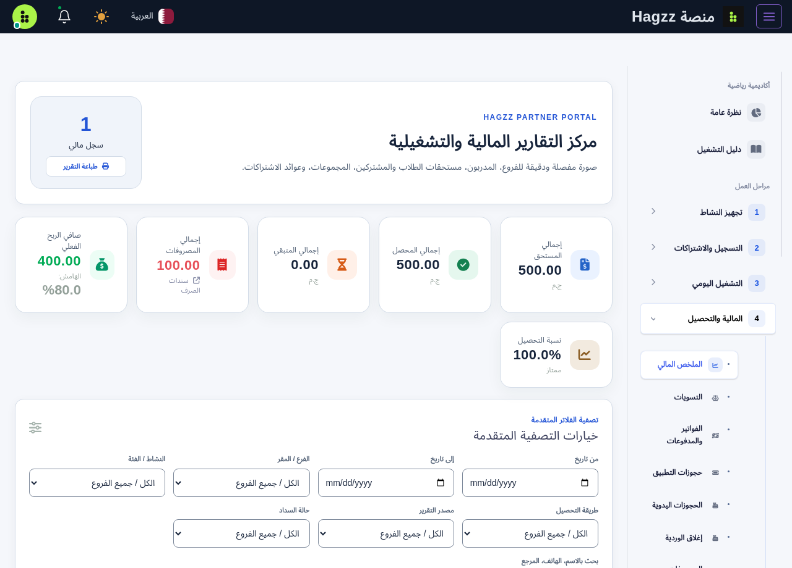
دليل الأكاديميات / قطرACADEMY EXPERIENCE GUIDEمسار المالك والإدارة / إعداد الوصول
 دليل الأكاديميات / قطرACADEMY EXPERIENCE GUIDE
دليل الأكاديميات / قطرACADEMY EXPERIENCE GUIDEتطبيق واحد للمالك وولي الأمر… بحسابين مستقلين.
بيانات حساب المالك
الصلاحيات المخصصة له
بيانات حساب مستقلة
ربط اللاعب مع الأكاديمية
رسم إرشادي يوضح فصل الحسابات؛ ليس صورة لشاشة الدخول ولا يعني وجود زرين بهذا الشكل داخل التطبيق.
دليل الأكاديميات / قطرACADEMY EXPERIENCE GUIDEHagzz Partner / حساب ولي الأمر
زود الأكاديمية باسم اللاعب ورقم تواصلك الصحيح، واطلب حساب ولي الأمر المخصص لك. لا ترسل رمز التحقق لأي شخص.
بعد الدخول تأكد من أنك ترى الأكاديمية واللاعب الصحيحين في البيانات التي تظهر لحسابك. إذا لم يظهر الربط، تواصل مع التسجيل.
اطلع على المواعيد أو الاشتراكات أو المتابعة التي تعرضها نسختك وحسابك. لا تفترض ظهور كل بيانات لوحة الإدارة.
عند اختلاف موعد أو رصيد، ارجع إلى الأكاديمية وقدم مرجع الاشتراك أو الإيصال. لا تنشئ ملف لاعب جديدًا لمعالجة اختلاف العرض.
دليل الأكاديميات / قطرACADEMY EXPERIENCE GUIDEتطبيق Hagzz / اختيار التدريبات
دليل الأكاديميات / قطرACADEMY EXPERIENCE GUIDEمسار اللاعب وولي الأمر / أول استخدام
أو الاستمرار كضيف
استخدم رقمك الصحيح
لا تشارك الرمز
مخطط بصري للخطوات مستند إلى مسار التطبيق؛ ليس لقطات شاشة فعلية. شكل الواجهة وطول الرمز قد يختلفان.
دليل الأكاديميات / قطرACADEMY EXPERIENCE GUIDEمسار اللاعب وولي الأمر / البحث والمراجعة
راجع الاسم والموقع والرياضة، وتأكد أنك اخترت الفرع الصحيح داخل قطر.
اقرأ العمر والمستوى والمواعيد والسعر وما يشمله، إذا كانت منشورة. استفسر من الأكاديمية عند غياب معلومة.
إذا ظهر وسم «تجريبي» أو «غير قابل للحجز»، فالبيانات للعرض فقط. لا تعتبرها عرضًا مؤكدًا أو تدفع بناءً عليها.
استخدم إجراء الحجز أو الدفع فقط عندما يكون متاحًا فعليًا للبرنامج. راجع تأكيد العملية ومرجعها، ولا تفترض توفر الحجز لكل عنصر.
دليل الأكاديميات / قطرACADEMY EXPERIENCE GUIDEنفّذ تجربة كاملة واحدة مع فريق الأكاديمية.
| التحقق | المطلوب قبل الاعتماد |
|---|---|
| □ هوية الأكاديمية | اسم وشعار وبيانات تواصل صحيحة |
| □ الموقع والمدرب | موقع مفعل ومدرب مرتبط بالرياضة |
| □ البرنامج والحصص | سعر وسعة وأيام وتوقيت بلا تعارض |
| □ اللاعب والمجموعة | ملف صحيح وعضوية مجموعة مؤكدة |
| □ الاشتراك والتحصيل | مدة وقيمة ودفعة اختبار مصرح بها ومراجعة الرصيد |
| □ الحضور | جلسة صحيحة وحالة لاعب محفوظة دون تكرار |
| □ صلاحيات الفريق | دخول مستقل واختبار ما يراه كل دور |
| □ تطبيق العملاء | تثبيت من المتجر واختبار تسجيل الدخول والتصفح |
| □ تجربة ولي الأمر | تأكيد الموعد والموقع ووسيلة التواصل مع الأكاديمية |
دليل الأكاديميات / قطرACADEMY EXPERIENCE GUIDEابدأ بالتحقق البسيط قبل إعادة إدخال البيانات.
| المشكلة | ماذا تفعل؟ |
|---|---|
| تعذر الدخول إلى لوحة الشركاء | راجع الرابط والبريد ولغة لوحة المفاتيح. اطلب إعادة تفعيل الوصول من مسؤول الأكاديمية. |
| صفحة غير ظاهرة | راجع الدور والصلاحيات ونوع حساب الأكاديمية مع المالك. |
| الموقع أو المدرب لا يظهر في البرنامج | راجع التفعيل والرياضة والفرع والحقول المطلوبة. |
| اللاعب غير موجود في الحضور | راجع عضوية المجموعة والجلسة وتاريخ التدريب. |
| المبلغ لا يطابق التحصيل | راجع الدفعات المسجلة ومرجع العملية والفترة المختارة، ولا تكرر الدفع مباشرة. |
| تعذّر مسح البطاقة | اسمح للكاميرا وحسّن الإضاءة وتحقق من البطاقة؛ استخدم كشف الحضور اليدوي عند الحاجة. |
| التطبيق لا يفتح أو يطول تحميله | تحقق من الاتصال وحدّثه من المتجر. استخدم إعادة المحاولة إن ظهرت وأرسل تفاصيل العطل للدعم. |
| رمز التحقق لا يصل | راجع الرقم ومفتاح الدولة وانتظر المدة الظاهرة، ثم جرّب إعادة الإرسال. لا تشارك الرمز مع أحد. |
دليل الأكاديميات / قطرACADEMY EXPERIENCE GUIDEHagzz / Qatar
تواصل معنا لتحديد احتياج أكاديميتك، والتعرف على تفاصيل المنحة، وترتيب التفعيل والتجربة الأولى مع فريقك.
هذا الجزء مخصص للأكاديميات. أدلة الجيم والمراكز الصحية، ثم الملاعب والمرافق الرياضية، تصدر في أجزاء مستقلة.